训练数据去重使语言模型更好
∗同等贡献。†Google Research，Brain Team。‡University of Pennsylvania。通信联系：katherinelee@google.com 和 daphnei@seas.upenn.edu。
摘要
我们发现，现有语言建模数据集包含许多近重复样本和很长的重复子串。结果是，在这些数据集上训练的语言模型，无提示输出中超过 1% 的内容逐字复制自训练数据。我们开发了两个工具，用于对训练数据集去重，例如，从 C4 中删除一个重复超过 60,000 次、由 61 个英文单词组成的句子。去重使我们能够训练模型，将输出记忆文本的频率降低 10 倍，并用更少训练步骤达到相同或更高的准确率。我们还能减少训练集与测试集重叠；标准数据集中超过 4% 的验证集受此影响，因此能实现更准确的评估。去重代码发布于 https://github.com/google-research/deduplicate-text-datasets。
1 引言
自然语言处理近期取得进步的一个关键因素，是发展了用于训练日益增大语言模型的大规模文本语料。过去几年，这些数据集从几个 GB 增长到高达 1 TB (Chelba et al., 2013; Xue et al., 2020; Graff et al., 2003; Brown et al., 2020)。由于对海量数据集进行人工审阅和整理极为昂贵，与较小的前代数据集相比，它们的质量往往较差。其影响远超困惑度和验证损失等指标，因为学习得到的模型会反映训练数据中的偏差 (Bender et al., 2021; Wallace et al., 2019; Sheng et al., 2020)。因此，从定量和定性角度理解这些数据集，本身就是一项研究挑战 (Dodge et al., 2021a)。
我们表明，一种特定偏差来源——重复训练样本——普遍存在：所研究的全部四个常用 NLP 数据集都包含重复内容。此外，四个对应验证集都包含与训练集重复的文本。虽然朴素去重很直接，而且我们考察的数据集已经采用某种朴素形式的去重，但大规模彻底去重既具有计算挑战，也需要复杂技术。
我们提出两种可扩展技术来检测并删除重复训练数据。精确子串匹配识别逐字重复的字符串，因此能发现训练样本中只有一部分重复的情况（§4.1）。近似完整文档匹配使用基于哈希的技术 (Broder, 1997)，识别具有很高 n-gram 重叠的文档对（§4.2）。
我们发现，在彻底去重的数据集上训练有四项不同优势。
- 在标准数据集，如 C4，上训练的模型，无提示输出的 token 中超过 1% 属于记忆序列（见 §6.2），尽管这个 1.5B 参数模型远小于其训练的 350GB 数据集。通过对训练集去重，我们将输出记忆训练数据的比率降低 10 倍。
- 未经去重的数据集经常存在训练集与测试集重叠。例如，我们发现 C4 (Raffel et al., 2020) 中一个 61 个词的序列1，在训练集中逐字重复 61,036 次，在验证集中重复 61 次，占两个数据集各自样本数的 0.02%。（下页接续）
1“通过结合奇妙的创意、有趣的安排，并遵循该领域的当前趋势，使你更受启发并加入艺术点缀。如果你能在婚礼中采用其中一些或全部设计，我们将深感荣幸。相信我，如果绝妙创意能够在现实中实现，并让你身边的人感到惊艳，那就再完美不过了！”
（接上页第 2 项）这种训练集与测试集重叠，不仅使研究者高估模型准确率，还使模型选择偏向刻意过拟合训练集的模型与超参数。
- 在去重数据集上训练模型更高效。使用我们的框架处理数据集，仅需一个只使用 CPU 的线性时间算法。由于这些数据集最多缩小 19%，即使计入去重本身的运行时间，在去重数据集上训练也能直接减少时间、金钱和环境方面的训练成本 (Bender et al., 2021; Strubell et al., 2019; Patterson et al., 2021)。
- 训练数据去重不会损害困惑度：在去重数据集上训练的模型，其困惑度不差于在原始数据集上训练的基线模型。有些情况下，去重最多降低 10% 困惑度。此外，由于近期 LM 通常限于仅训练几个 epoch (Radford et al., 2019; Raffel et al., 2020)，用更高质量数据训练可更快达到更高准确率。
总而言之，数据去重具有显著优势，未观察到劣势。本文其余部分在 §4 介绍文本去重框架，在 §5 研究常用 NLP 数据集，如 C4、Wiki-40B、LM1B，重复内容的程度。随后考察去重对测试困惑度（§6.1）及输出记忆内容频率（§6.2）的影响。最后分析，由于训练划分与测试或验证划分重叠，现有已发布模型的困惑度在多大程度上受到扭曲（§6.3）。
2 相关工作
大型语言模型数据集。虽然我们相信结果与模型架构无关，但分析使用了基于 transformer、仅解码器的语言模型 (Vaswani et al., 2017)，用于开放式文本生成。这些当前领先模型使用互联网文本训练。例如，Radford et al. (2019) 的 GPT-2 模型家族，使用 WebText 训练；该数据集包含 Reddit 上排名较高的网页文档，但未公开。常见的数据集起点是 CommonCrawl，即公开网页索引。使用 CommonCrawl 训练的模型包括加入书籍数据集的 GPT-3 (Brown et al., 2020)，使用名为 RealNews 的新闻域名过滤受限子集的 GROVER (Zellers et al., 2019)，以及使用名为 C4 的 Common Crawl 清洗版本的 T5 (Raffel et al., 2020)。其他模型使用经过更多整理的互联网来源训练，例如 Guo et al. (2020) 使用来自 40 种不同语言、经过处理的高质量 Wikipedia 文本，训练单语言 141.4M 参数语言模型。非英文模型必然使用不同数据集；例如 Zeng et al. (2021) 推出 PANGU-α 模型家族，最多 200B 参数，使用来自 CommonCrawl 与其他来源、经过清洗过滤的非公开中文文档语料训练。由于许多数据集不公开，我们对三个公开数据集 Wiki-40B、C4、RealNews 去重，另外还包括 One Billion Word Language Model Benchmark (Chelba et al., 2013)，一个常用于评估的较小数据集。
下游任务污染。用抓取互联网构建的数据集训练模型，可能使模型在下游目标任务的测试集上训练。例如，Radford et al. (2019, §4) 通过事后分析，识别 GPT-2 训练集与评估数据集之间的 8-gram 重叠；Dodge et al. (2021b) 分析 C4，发现各种标准任务最多 14.4% 的测试样本，以逐字形式存在于该数据集中，判断时将大小写与标点归一化。更主动的方法是删除受污染数据。Trinh and Le (2018, Appendix B) 从基于 CommonCrawl 的训练集中，删除与用于评估的常识推理数据存在大量重叠的文档。GPT-3 (Brown et al., 2020, §5) 则反向操作，从训练数据中删除下游评估样本：保守地过滤任何与任一评估样本有 13-gram 重叠的训练样本。最多 90% 的任务被标记为可能受污染。
我们的研究不关注预训练模型中的重复文本对下游基准任务的影响，而关注 LM 训练集与验证集中的重复文本，如何影响模型困惑度及生成文本包含记忆内容的程度。
记忆训练数据。Carlini et al. (2020) 强调了数据记忆的隐私风险，例如能够提取有效电话号码和 IRC 用户名等敏感数据。他们的论文发现 GPT-2 从训练集输出的 604 个样本，而我们表明，大多数模型输出数据中超过 1% 是记忆的训练数据。计算机视觉中，从多个角度研究了判别模型和生成模型对训练数据的记忆，例如 Arpit et al., 2017; Webster et al., 2019; Feldman and Zhang, 2020; Stephenson et al., 2021; Teterwak et al., 2021。
训练数据中的重复文本。用于训练 BERT 等流行模型的 Book Corpus (Zhu et al., 2015)，据 Bandy and Vincent (2021) 所述，包含大量完全重复文档。Allamanis (2019) 表明，代码数据集中的重复样本，会使代码理解任务性能恶化。
3 语言建模数据集
我们分析四个不同规模数据集中的重复文本；这些数据集用于训练自然语言生成系统、生成通用预训练模型，以及语言模型基准测试。虽然本文限定英文数据集，但我们预计非英文数据集也存在类似问题，同样可从去重中受益。
Wikipedia（Wiki-40B）。由清洗后的多语言 Wikipedia 文本构成 (Guo et al., 2020)。我们取其英文部分，含 2.9M 个 Wikipedia 页面，平均长度 768 BPE token。创建者未说明执行了任何去重，除了删除重定向页，例如从“sunflower”重定向到“Helianthus”。
One-Billion Word 基准（LM1B）。含 30M 个新闻评论句子 (Chelba et al., 2013)。与其他分析的数据集不同，LM1B 每个样本只含一个句子，而非多句文档。样本平均长度 32 BPE token。虽然该数据集是语言模型基准测试的标准选择，Radford et al. (2019, Sec 4) 指出其测试集与训练集存在 13.2% 重叠。
Colossal Cleaned Common Crawl（C4）。由 360M 个网页文档构成，平均长度 486 BPE token (Raffel et al., 2020)。C4 最初作为 T5 的预训练数据集推出，T5 是一组编码器—解码器模型，广泛用于经过微调的下游任务。该数据集此前采用比前两个数据集更复杂的去重过程。对每段进行哈希，并删除出现哈希碰撞的段落。随后再遍历删除占位文本、代码与禁用词。C4 来源文本详细分解见 Dodge et al. (2021a)。
RealNews。是 Common Crawl 的一个子集，由新闻域名上的文章构成 (Zellers et al., 2019)。包含 31M 个文档，平均长度 793 BPE token。RealNews 将每个文档前 100 个字符的哈希值插入 Bloom filter (Bloom, 1970)，然后排除任何产生哈希碰撞的文档，以此去重。与 C4 一样，具有重复 URL 的样本被排除。
4 识别重复内容的方法
发现重复样本的最简单技术，是在所有样本对间执行精确字符串匹配，但正如我们将展示的，这还不够。我们引入两种互补的去重方法。第一，利用后缀数组 (Manber and Myers, 1993)，若重复子串逐字出现在多个样本中，就从数据集中删除它。第二，利用 MinHash (Broder, 1997)，这一高效算法估计语料中所有样本对的 n-gram 相似度；若某样本与其他任一样本有很高的 n-gram 重叠，就从数据集中删除整个样本。
把数据集 \(D=\{x_i\}_{i=1}^{N}\) 视为样本 \(x_i\) 的集合。每个样本本身是一个 token 序列：\(x_i=[x_i^1,x_i^2,\ldots,x_i^{s_i}]\)。
4.1 精确子串重复
由于人类语言表达方式多样，除非一个表达源于另一个，或两者引用共同来源，否则同一思想很少在多个文档中以完全相同方式表达。这一观察促使我们对精确子串去重。我们将该方法称为 EXACTSUBSTR。当两个样本 \(x_i\) 与 \(x_j\) 共享足够长的子串，即 \(x_i^{a..a+k}=x_j^{b..b+k}\)，就从其中一个样本删除该子串。根据统计分析（§B），选择 \(k=50\) token 作为最短匹配子串长度。
该方法所需计算的分解见附录 B。
4.1.1 后缀数组
这一精确子串匹配准则概念简单，但朴素的二次复杂度全样本对匹配，在计算上不可承受。为提高效率，将整个数据集 \(D\) 的所有样本拼接为巨大序列 \(S\)，并构造 \(S\) 的后缀数组 \(A\)。后缀数组 (Manber and Myers, 1993) 是后缀树 (Weiner, 1973) 的一种表示，可在相对于 \(\lVert S\rVert\) 的线性时间内构建 (Kärkkäinen and Sanders, 2003)，并高效计算多种子串查询；特别是，允许在线性时间内识别重复训练样本。相比后缀树，后缀数组内存效率高 10–100 倍 (Manber and Myers, 1993)，每个输入 token 仅需 8 字节，但部分查询类型的渐近效率较低。它们已广泛用于 NLP，例如高效 TF-IDF 计算 (Yamamoto and Church, 2001) 与文档聚类 (Chim and Deng, 2007)。
序列 \(S\) 的后缀数组 \(A\)，是其所有后缀按字典序排列的列表。形式化为：
\(\displaystyle A(S)=\operatorname{arg\,sort}\,\operatorname{all\_suffixes}(S)\)
例如，序列“banana”的后缀为（“banana”、“anana”、“nana”、“ana”、“na”、“a”），因此后缀数组为序列（6 4 2 1 5 3）。实践中，我们从文本 BPE token 化后的字节构建 \(S\)（§6）。
4.1.2 子串匹配
构建 \(A\) 后，识别重复训练样本很直接。假设序列 \(s\) 在训练数据集 \(S\) 的位置 \(i\) 与 \(j\) 恰好重复两次，即 \(S_{i..i+|s|}=S_{j..j+|s|}\)。则索引 \(i,j\) 在后缀数组 \(A\) 中相邻。
因此，发现所有重复序列只需从头到尾线性扫描后缀数组，寻找共享至少某个阈值长度公共前缀的序列 \(A_i,A_{i+1}\)。记录所有满足条件的序列。该算法易于并行，所以能高效处理数据集。根据实验（附录 B），所有实验均选择 50 BPE token 的长度阈值。
4.2 使用 MinHash 进行近似匹配
我们也根据完整样本匹配执行近似去重。该方法称为 NEARDUP，是精确子串匹配的良好补充，尤其适用于网页抓取文本，因为它能处理非常常见的情况：文档除穿插的模板字段外完全相同，例如表 1 最后一行。
MinHash (Broder, 1997) 是广泛用于大规模去重任务的近似匹配算法 (Versley and Panchenko, 2012; Gabriel et al., 2018; Gyawali et al., 2020)，包括对大型中文 LM 的训练集去重 (Zeng et al., 2021)。给定两个文档 \(x_i,x_j\)，核心思想是用各自的 n-gram 集合 \(d_i,d_j\) 表示文档。随后可用哈希函数近似 Jaccard 指数 (Jaccard, 1912)：
\(\displaystyle \operatorname{Jaccard}(d_i,d_j)=\frac{|d_i\cap d_j|}{|d_i\cup d_j|}\)
若 \(d_i,d_j\) 的 Jaccard 指数足够高，两个文档很可能近似匹配。为高效近似 Jaccard 指数，MinHash 用哈希函数排序每个 n-gram，再仅保留哈希值最小的 \(k\) 个 n-gram，构建文档签名。从此类签名构建 Jaccard 指数估计量有多种方式 (Cohen, 2016)。
实现中，我们使用 5-gram 与大小为 9,000 的签名。两个文档被视为潜在匹配的概率为：
\(\displaystyle \Pr(d_i,d_j\mid\operatorname{Jaccard}(d_i,d_j)=s_{i,j})=1-(1-s_{i,j}^{b})^{r}\)
其中 \(b=20\)、\(r=450\) 是用户可设置的参数，用于控制过滤强度。更多细节见附录 A。
对每个识别为潜在匹配的文档对，后续过滤步骤可采用计算更昂贵的相似度指标。具体而言，若两个文档被 MinHash 算法匹配，且编辑相似度大于 0.8，则将其视为重复。token 序列 \(x_i,x_j\) 的编辑相似度定义为：
\(\displaystyle \operatorname{EditSim}(x_i,x_j)=1-\frac{\operatorname{EditDistance}(x_i,x_j)}{\max(|x_i|,|x_j|)}\)
为构建相似文档簇，我们构造图：如果两个文档被视为匹配，就在它们之间连边。然后，我们（下页接续）
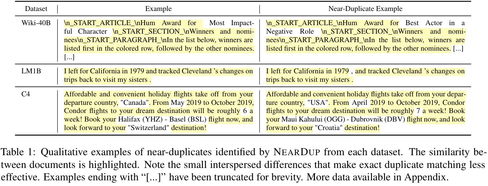
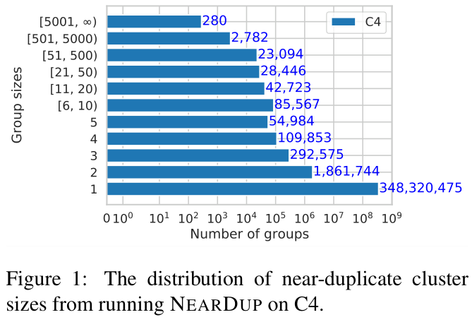
（接上页）使用 Łącki et al. (2018) 提出的方法识别连通分量。所需计算的分解见附录 A。
5 去重结果
对四个数据集，均采用两种技术分别去重。文本在多个数据划分中重复时，优先在测试集或验证集保留一份副本，并从训练集删除。
5.1 删除的文本量
使用 NEARDUP，发现网页抓取数据集中，近重复内容占比从 C4 的 3.04% 到 RealNews 的 13.63%（表 2）。Wiki-40B 的近重复文本少得多，仅占训练集 0.39%2。C4 中，大多数近重复簇（1.8M）只含一对相互匹配的样本，但有 280 个簇包含超过 5,000 个样本（图 1），其中一个簇大小为 250,933。
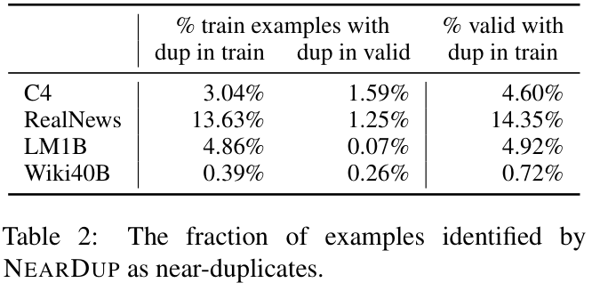
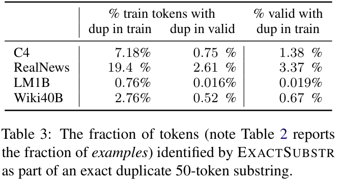
平均而言，EXACTSUBSTR 删除的总内容多于 NEARDUP，尽管 EXACTSUBSTR 不直接删除任何整个样本，例如删除 C4 中 7.18% 的 token。例外是 LM1B，EXACTSUBSTR 删除数据量比 NEARDUP 少八倍。调查发现，这是因为 LM1B 文档显著更短：90% 文档少于 50 token，因此即使整个序列逐字相同，也无法成为潜在匹配候选。NEARDUP 与 EXACTSUBSTR 删除的内容类似：NEARDUP 从 C4 删除的训练样本中，77% 至少包含一个被 EXACTSUBSTR 找到的逐字长度 50 匹配。
2我们看到的大多数重复内容是自动生成的页面，如体育比赛结果。这体现人工整理对创建高质量数据集的优势。
5.2 重复文本的性质
虽然 RealNews 和 C4 作者在构建数据集时明确尝试去重，但方法不足以捕获互联网常见、更微妙的重复文本类型。在 C4 与 Wiki-40B 中，我们定性观察到，被识别为近重复的许多文本由计算机生成。文本除地点、企业、产品、日期等名称外完全相同。由于这些样本通常每次只差几个词，依赖精确字符串匹配的去重策略无法识别匹配。每个数据集的重复样本对见表 1，附录包含更多例子。
对于来自新闻网站的 RealNews 与 LM1B，观察到许多近重复内容源于同一新闻文章在多个新闻网站出现，格式略有差异。例如，LM1B 中有一个样本以“纽约州 MINEOLA——纽约官员表示 [...]”开头，另一个以“（AP）——纽约官员表示 [...]”开头。除此之外，两个样本完全相同。
5.3 训练集／测试集泄漏
两种去重方法都识别出训练集与验证集重叠（表 2）。例如，C4 验证集 4.6% 的样本，RealNews 验证集 14.4% 的样本，在各自训练集中有近似重复项。这类重复存在问题，因为它可能不公平地抬高更善于记忆训练集的模型的评估指标。第 6.3 节评估这种泄漏对公开发布模型的影响。
6 对训练模型的影响
我们分别在 C4-ORIGINAL、C4-NEARDUP 和 C4-EXACTSUBSTR 上，训练类似 GPT-2 的 1.5B 参数“XL”、仅解码器、基于 transformer 的语言模型。使用 Raffel et al. (2020) 的 T5 代码库与模型架构，每个模型在对应数据集上训练约两个 epoch。为更好地理解训练模型困惑度的方差，还对上述三个数据集，各用三个不同随机种子训练 110M 参数“base”模型，共九个 base 规模模型。
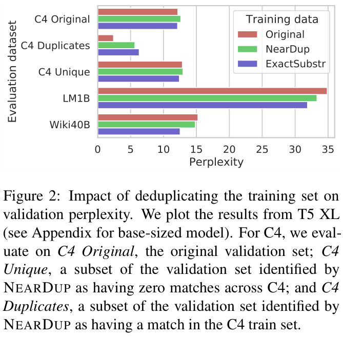
所有实验都使用在 C4-NEARDUP 上训练的 Byte Pair Encoding（BPE）词表，预算为 50K token，得到与 GPT-2 相同大小的词表。训练最大序列长度为 512 token；更长文档随机提取该长度的子序列。其他训练细节见附录 C。
6.1 模型困惑度
我们计算训练模型在 LM1B 与 Wiki-40B 验证集，以及 C4 验证集子集上的困惑度（图 2）。对于 base 规模，所有模型在原始 C4 验证集，以及被识别为不重复的验证样本，即训练或验证中都无近重复项，具有类似困惑度。但对于训练集中有重复项的验证样本，两个用去重数据训练的模型，其困惑度均显著高于使用原始 C4 的模型。EXACTSUBSTR 去重后的困惑度高于 NEARDUP 去重。XL 规模模型也有这些趋势。虽然这可能表明 EXACTSUBSTR 去重产生对训练集过拟合最少的模型，但需注意，两种技术采用不同重复阈值，选择不同阈值可能改变结果。
在 LM1B 与 Wiki-40B 验证集评估时，使用 NEARDUP 去重 C4 训练的模型始终达到最低困惑度；base 模型的 LM1B 评估见附录图 7。EXACTSUBSTR 去重将 XL 模型在 Wiki-40B 的困惑度降低近三个点，这（下页接续）
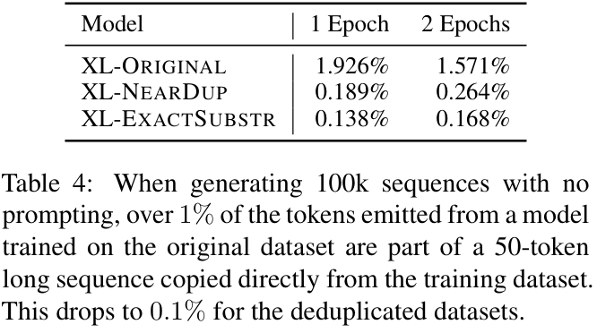
（接上页）远大于我们在 base 模型中观察到的约一个困惑度点的波动，而且总计看到的训练数据 token 更少。
最后，所有 XL 模型在 LM1B 上的困惑度均低于 35，低于 1.5B GPT-2 所报告的 42.16；后者使用与我们大小相同的词表。
6.2 生成文本
数据重复使训练后的 LM 偏向特定类型样本，可能导致生成内容多样性降低，以及生成内容复制训练数据的概率增加 (Carlini et al., 2020)。生成实验采用 \(k=50\) 的 top-k 随机采样，实验包括有提示和无提示生成。
无提示。首先评估要求模型不提供任何提示序列而生成文本时的记忆倾向。生成 100,000 个样本，每个最多 512 token，例子见附录。对于每个生成 token，如果它属于一个在训练数据中完整存在的 50-token 子串，就称其为记忆的 token。XL-ORIGINAL 中，超过 1% 的生成 token 属于记忆的子序列（见表 4）。这比 XL-EXACTSUBSTR 或 XL-NEARDUP 的记忆约多十倍。附录表 9 列出一些逐字复制自训练集的子序列例子。
有提示。大多数实际用例通过提供提示让模型续写，控制语言模型生成。实验使用四种可能的提示来源：被 EXACTSUBSTR 识别为训练集中有近重复项的训练样本（train dup），被识别为不重复的训练样本（train unique），在训练集中有近重复项的验证样本（valid in train），以及在所有划分中均被识别为不重复的验证样本（valid unique）。选择每个样本前 32 token 作为提示，因此能评估与该提示真实续写近重复的生成结果比例（图 3）。提示来自训练集重复样本时，XL-ORIGINAL 超过 40% 的情况复现真实续写。XL-EXACTSUBSTR 与 XL-NEARDUP 在提示来自重复样本时，仍比来自不重复样本更经常复制真实内容，表明完全消除记忆倾向可能需要更严格去重。
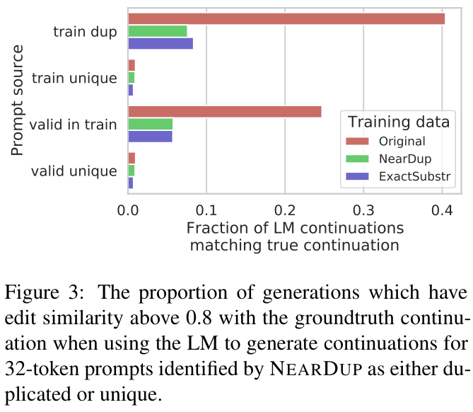
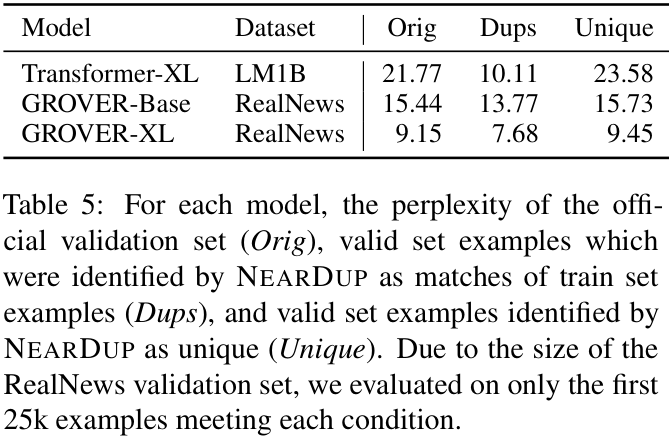
6.3 对现有模型的影响
训练集与测试集泄漏不仅影响在 C4 上训练的模型。表 5 显示，训练集中存在评估集近重复项，对两个标准模型的困惑度有显著影响：使用 LM1B 训练的 Transformer-XL (Dai et al., 2019)，以及使用 RealNews 训练的 GROVER (Zellers et al., 2019)。对于 Transformer XL，困惑度（下页接续）
（接上页）在被识别为近重复的样本上减半。对于 GROVER，差异虽不如此显著，但考察的两个模型规模中均存在。
现有模型也存在生成训练集文本的问题。我们发现，官方发布的 25k 条 GROVER-Mega 输出3中，1.38% 的 token 属于与 RealNews 长度至少 50 的逐字匹配。同样，GPT-Neo 1.3B (Black et al., 2021) 输出约 200k 个序列中，超过 5% 的 token 属于与其训练数据 Pile (Gao et al., 2020) 的 50-token 匹配。
7 讨论
本文关注用于训练语言模型的数据集。近期工作着重记录有问题数据集可能引发的潜在危害 (Bender and Friedman, 2018; Gebru et al., 2020)，但对真实语言建模数据集性质做定量分析的研究较少，例如 Dodge et al. (2021a) 对 C4 的分析。本文提供一个特定维度，即数据重复方面的分析。
实验测量能够量化的内容：常见数据集重复内容数量，去重对训练模型困惑度的影响，以及通过去重减少训练模型记忆内容。我们不关注被去重删除或被 LM 记忆的数据本质。
隐私是未来研究的重要主题，因为记忆的训练数据具有重大隐私影响。这里采用标准隐私定义：相对于来自类似分布的另一个训练集，模型不应泄露其实际训练的特定数据集独有的任何信息 (Shokri et al., 2017)4。在尚未去重的标准数据集上训练，会使模型对恰巧重复多次的样本特别敏感，这具有负面隐私影响。例如，若某人公开可用的个人数据出现在另一种出乎意料的语境中，可能违反其隐私预期。LM 的下游应用，如游戏 AI Dungeon5，也不应输出真实产品广告等记忆内容。
我们强调，实验中不区分不希望被记忆的文本，如电话号码，无害的记忆文本，如常见短语，以及可能希望被记忆的文本，如公众人物的引言；而是把所有 LM 生成与训练集紧密匹配文本的情况均视为有问题。虽然定性观察发现，识别出的许多记忆内容相对无害，但对检测到的记忆相关风险进行更系统研究，超出本工作范围。
我们也未调查去重的负面后果。有些语言任务明确需要记忆，例如文档检索或闭卷问答。此外，提供归属信息的文本经常在多个文档间重复，因此删除重复子串可能恰好删除归属信息，使模型学习内容却没有附带归属信息。去重也不足以删除银行密码与医疗记录等隐私敏感数据，它们绝不应被用于训练数据 (Brown et al., 2022)。
最终，记忆究竟是语言模型所需的性质，还是有风险且不想要的性质，既取决于被记忆文本本质，也取决于训练模型的下游应用。然而，由于趋势是构建与具体应用无关的数据集和模型，我们鼓励研究者仔细思考已收集数据的局限，以及模型预期用途如何约束哪些内容应属于训练集。根据最终应用，发展记忆或忘记特定序列的技术，是有希望的研究方向。
8 结论
我们鼓励未来语言模型研究执行数据集去重，可以使用我们发布的去重数据集训练，使用我们发布的去重工具，或遵循我们的方法，用新工具去重数据集。
相比首先执行严格去重，用于去重的具体技术没那么重要。总体而言，去（下页接续）
3 gs://grover-models/generation_examples/generator=mega~dataset=p0.90.jsonl
4另一种隐私解释关注所涉数据的敏感性，即模型使用个人标识符或其他形式“私人数据”训练，并能够复现它们。我们的定义更广泛。
（接上页）重不会损害模型困惑度，有时还会改善，尽管去重数据集更小、训练更快。训练集与测试集之间没有重复项尤其重要，因为此处重叠会明确鼓励选择记忆训练数据的模型。最后，去重有助于减少一些关于 LM 记忆训练数据的隐私顾虑。
伦理
大型语言模型开发者通常试图创建反映自然人类交流的训练数据，但当前收集与整理此类数据集的方法会出错。某些文本过度代表有多种原因。例如，机器人回复、自动生成模板和许可证，由于法律、经济等结构性原因而重复，这也被 Dodge et al. (2021a) 观察到。此外，常见的数据获取与“清洗”技术，可能导致世界用户中的特定子群过度代表，往往是英语使用者和在成熟论坛发帖的人。这实际上使非英语使用者，以及交流主要发生在公开网络以外的群体代表不足。本文关注某些文本类型过度代表，即结构性重复问题，但未处理其他类型代表不足的问题。
此外，虽然讨论了何时可能希望记忆内容、何时可能不希望，但分析没有区分这两种情况。区分有益记忆与有害记忆极其复杂，需要与本工作不同的一套研究方法。
致谢
感谢众多研究者，他们的技术帮助、反馈与讨论塑造了本项目：Jacob Austin、Samy Bengio、Olivier Bousquet、James Bradbury、Fernando Diaz、Mark Diaz、Noah Fiedel、Jonathan Frankle、David Grangier、Stefanie Karp、David Mimno、Gaurav Mishra、Michael Mozer、Sharan Narang、Alex Passos、Adam Roberts、Hanie Sedghi、Jascha Sohl-dickstein、David So、Florian Tramer、Yun William Yu。也感谢持续支持我们的 Google Brain 女性同事。
Chris Callison-Burch 与 Daphne Ippolito 的研究部分由 DARPA KAIROS Program（合同 FA8750-19-2-1004）、DARPA LwLL Program（合同 FA8750-19-2-0201）及 IARPA BETTER Program（合同 2019-19051600004）支持。文中观点与结论为作者观点，不应被理解为必然代表 DARPA、IARPA 或美国政府的明示或暗示官方政策。
贡献
本文每位作者均为最终结果作出重要贡献。
- Katherine 训练了论文使用的模型，构建并运行评估与文本生成流水线，并对写作、分析、项目组织与管理作出重要贡献。
- Daphne 运行近似匹配数据去重流水线，提取提示和评估数据集，运行评估流水线，并对规划、写作与分析作出重要贡献。
- Andrew 编写近似匹配去重代码，帮助评估能源开销，并协助分析。
- Chiyuan 帮助生成绘图，并参与项目范围界定、写作与数据分析。
- Chris 全程提供指导，并参与写作。
- Doug 全程提供指导，并参与写作。
- Nicholas 编写后缀数组实现，运行全部 EXACTSUBSTR 去重实验，并对规划、写作、分析与项目范围界定作出重要贡献。
参考文献
Miltiadis Allamanis. 2019. 代码重复对代码机器学习模型的负面影响。载于 Proceedings of the 2019 ACM SIGPLAN International Symposium on New Ideas, New Paradigms, and Reflections on Programming and Software，第 143–153 页。
参考文献（接续）
Devansh Arpit, Stanisław Jastrzębski, Nicolas Ballas, David Krueger, Emmanuel Bengio, Maxinder S Kanwal, Tegan Maharaj, Asja Fischer, Aaron Courville, Yoshua Bengio, et al. 2017. 进一步考察深度网络中的记忆 载于 International Conference on Machine Learning, 页码：233–242. PMLR.
Jack Bandy and Nicholas Vincent. 2021. 处理机器学习研究中的“文档债”：BookCorpus 的回顾性数据说明表 原文链接
Emily M. Bender and Batya Friedman. 2018. 自然语言处理的数据声明：迈向减轻系统偏差与促进更好科学研究。 Transactions of the Association for Computational Linguistics, 6:587–604. 原文链接
Emily M. Bender, Timnit Gebru, Angelina McMillan-Major, and Shmargaret Shmitchell. 2021. 随机鹦鹉的危险：语言模型会不会太大？ . 载于 Proceedings of the 2021 ACM Conference on Fairness, Accountability, and Transparency, FAccT ’21, 页码：610–623, New York, NY, USA. Association for Computing Machinery. 原文链接
Sid Black, Leo Gao, Phil Wang, Connor Leahy, and Stella Biderman. 2021. GPT-Neo：使用。 Mesh TensorFlow 的大规模自回归语言建模 原文链接
Burton H Bloom. 1970. 允许误差的哈希编码中的空间／时间权衡。 Communications of the ACM, 13(7):422–426.
Andrei Z Broder. 1997. 关于文档的相似性与包含关系 载于 Proceedings. Compression and Complexity of SEQUENCES 1997 (Cat. No. 97TB100171), 页码：21–29. IEEE.
Hannah Brown, Katherine Lee, Fatemehsadat Mireshghallah, Reza Shokri, and Florian Tramèr. 2022. 语言模型保护隐私意味着什么？ arXiv 预印本.
Tom B Brown, Benjamin Mann, Nick Ryder, Melanie Subbiah, Jared Kaplan, Prafulla Dhariwal, Arvind Neelakantan, Pranav Shyam, Girish Sastry, Amanda Askell, et al. 2020. 语言模型是少样本学习器 载于 Advances in Neural Information Processing Systems 33.
Nicholas Carlini, Florian Tramer, Eric Wallace, Matthew Jagielski, Ariel Herbert-Voss, Katherine Lee, Adam Roberts, Tom Brown, Dawn Song, Ulfar Erlingsson, Alina Oprea, and Colin Raffel. 2020. 从大型语言模型中提取训练数据 原文链接
Ciprian Chelba, Tomas Mikolov, Mike Schuster, Qi Ge, Thorsten Brants, Phillipp Koehn, and Tony Robinson. 2013. 用于衡量统计语言建模进展的十亿词基准 arXiv 预印本 arXiv:1312.3005.
Hung Chim and Xiaotie Deng. 2007. 一种用于文档聚类的新后缀树相似度度量。 In 原文链接
Proceedings of the 16th International Conference on World Wide Web, WWW ’07, 页码：121–130, New York, NY, USA. Association for Computing Machinery.
Edith Cohen. 2016. MinHash sketch：简要综述 原文链接
Zihang Dai, Zhilin Yang, Yiming Yang, Jaime Carbonell, Quoc V Le, and Ruslan Salakhutdinov. 2019. Transformer-XL：超越固定长度上下文的 attention 语言模型 arXiv 预印本 arXiv:1901.02860.
Jesse Dodge, Maarten Sap, Ana Marasovic, William Agnew, Gabriel Ilharco, Dirk Groeneveld, and Matt Gardner. 2021a. 记录英文。 Colossal Clean Crawled Corpus 原文链接
Jesse Dodge, Maarten Sap, Ana Marasovic, William Agnew, Gabriel Ilharco, Dirk Groeneveld, and Matt Gardner. 2021b. 记录英文。 Colossal Clean Crawled Corpus arXiv 预印本 arXiv:2104.08758.
Vitaly Feldman and Chiyuan Zhang. 2020. 神经网络记忆什么以及为什么：通过影响估计发现长尾 载于 Advances in Neural Information Processing Systems.
Rodney A. Gabriel, Tsung-Ting Kuo, Julian McAuley, and Chun-Nan Hsu. 2018. 在大型临床记录数据集中识别和刻画高度相似记录。 Journal of Biomedical Informatics, 82:63– 69. 原文链接 · 文献 DOI（修复原文重复前缀）
Leo Gao, Stella Biderman, Sid Black, Laurence Golding, Travis Hoppe, Charles Foster, Jason Phang, Horace He, Anish Thite, Noa Nabeshima, Shawn Presser, and Connor Leahy. 2020. The Pile：用于语言建模的 800GB 多样化文本数据集 arXiv 预印本 arXiv:2101.00027.
Timnit Gebru, Jamie Morgenstern, Briana Vecchione, Jennifer Wortman Vaughan, Hanna Wallach, Hal Daumé III au2, and Kate Crawford. 2020. 数据集说明表 原文链接
David Graff, Junbo Kong, Ke Chen, and Kazuaki Maeda. 2003. 英文 Gigaword Linguistic Data Consortium, Philadelphia, 4(1):34.
Mandy Guo, Zihang Dai, Denny Vrandecic, and Rami Al-Rfou. 2020. Wiki-40B：多语言语言模型数据集 载于 LREC 2020. 原文链接
Bikash Gyawali, Lucas Anastasiou, and Petr Knoth. 2020. 使用局部敏感哈希与词 embeddings 对学术文档去重 载于 Proceedings of the 12th Language Resources and Evaluation Conference, 页码：901–910.
Paul Jaccard. 1912. 高山地带植物群的分布。 New phytologist, 11(2):37–50.
参考文献（接续）
Juha Kärkkäinen and Peter Sanders. 2003. 简单的线性工作量后缀数组构造 载于 International colloquium on automata, languages, and programming, 页码：943–955. Springer.
Pang Ko and Srinivas Aluru. 2003. 空间高效的线性时间后缀数组构造 载于 Annual Symposium on Combinatorial Pattern Matching, 页码：200–210. Springer.
Udi Manber and Gene Myers. 1993. 后缀数组：一种在线字符串搜索的新方法 siam Journal on Computing, 22(5):935–948.
Ge Nong, Sen Zhang, and Wai Hong Chan. 2009. 通过近乎纯粹的诱导排序线性构造后缀数组 载于 2009 data compression conference, 页码：193–202. IEEE.
David Patterson, Joseph Gonzalez, Quoc Le, Chen Liang, Lluis-Miquel Munguia, Daniel Rothchild, David So, Maud Texier, and Jeff Dean. 2021. 碳排放与大型神经网络训练 原文链接
Alec Radford, Jeffrey Wu, Rewon Child, David Luan, Dario Amodei, and Ilya Sutskever. 2019. 语言模型是无监督多任务学习器。 OpenAI blog, 1(8):9.
Colin Raffel, Noam Shazeer, Adam Roberts, Katherine Lee, Sharan Narang, Michael Matena, Yanqi Zhou, Wei Li, and Peter J. Liu. 2020. 使用统一文本到文本 transformer 探索迁移学习的极限。 Journal of Machine Learning Research, 21(140):1–67. 原文链接
Noam Shazeer and Mitchell Stern. 2018. Adafactor：亚线性内存成本的自适应学习率 载于 International Conference on Machine Learning, 页码：4596–4604. PMLR.
Emily Sheng, Kai-Wei Chang, Premkumar Natarajan, and Nanyun Peng. 2020. 迈向语言生成中的可控偏差 arXiv 预印本 arXiv:2005.00268.
Reza Shokri, Marco Stronati, Congzheng Song, and Vitaly Shmatikov. 2017. 针对机器学习模型的成员推断攻击 载于 2017 IEEE Symposium on Security and Privacy (SP), 页码：3–18. IEEE.
Cory Stephenson, Suchismita Padhy, Abhinav Ganesh, Yue Hui, Hanlin Tang, and SueYeon Chung. 2021. 深度神经网络泛化与记忆的几何性质 载于 International Conference on Learning Representations.
Emma Strubell, Ananya Ganesh, and Andrew McCallum. 2019. NLP 深度学习的能源与政策考量 原文链接
Piotr Teterwak, Chiyuan Zhang, Dilip Krishnan, and Michael C Mozer. 2021. 通过判别训练分类器的前馈反演理解不变性 载于 International Conference on Machine Learning, 页码：10225–10235. PMLR.
Trieu H Trinh and Quoc V Le. 2018. 一种简单的常识推理方法 arXiv 预印本 arXiv:1806.02847.
Ashish Vaswani, Noam Shazeer, Niki Parmar, Jakob Uszkoreit, Llion Jones, Aidan N Gomez, Lukasz Kaiser, and Illia Polosukhin. 2017. Attention 就是你所需要的全部 arXiv 预印本 arXiv:1706.03762.
Yannick Versley and Yana Panchenko. 2012. 不只是更大：迈向更高质量网页语料 载于 Proceedings of the seventh Web as Corpus Workshop (WAC7), 页码：44–52.
Eric Wallace, Shi Feng, Nikhil Kandpal, Matt Gardner, and Sameer Singh. 2019. 用于攻击与分析。 NLP 的通用对抗触发器 arXiv 预印本 arXiv:1908.07125.
Ryan Webster, Julien Rabin, Loïc Simon, and Frédéric Jurie. 2019. 通过潜变量恢复检测深度生成网络过拟合 载于 2019 IEEE/CVF Conference on Computer Vision and Pattern Recognition (CVPR), 页码：11265–11274. 原文链接
Peter Weiner. 1973. 线性模式匹配算法 载于 14th Annual Symposium on Switching and Automata Theory (swat 1973), 页码：1–11. IEEE.
Linting Xue, Noah Constant, Adam Roberts, Mihir Kale, Rami Al-Rfou, Aditya Siddhant, Aditya Barua, and Colin Raffel. 2020. mT5：大规模多语言预训练文本到文本 transformer arXiv 预印本 arXiv:2010.11934.
Mikio Yamamoto and Kenneth W Church. 2001. 使用后缀数组计算语料中所有子串的词频与文档频率。 Computational Linguistics, 27(1):1–30.
Rowan Zellers, Ari Holtzman, Hannah Rashkin, Yonatan Bisk, Ali Farhadi, Franziska Roesner, and Yejin Choi. 2019. 防御神经网络生成的假新闻 arXiv 预印本 arXiv:1905.12616.
Wei Zeng, Xiaozhe Ren, Teng Su, Hui Wang, Yi Liao, Zhiwei Wang, Xin Jiang, ZhenZhang Yang, Kaisheng Wang, Xiaoda Zhang, Chen Li, Ziyan Gong, Yifan Yao, Xinjing Huang, Jun Wang, Jianfeng Yu, Qi Guo, Yue Yu, Yan Zhang, Jin Wang, Hengtao Tao, Dasen Yan, Zexuan Yi, Fang Peng, Fangqing Jiang, Han Zhang, Lingfeng Deng, Yehong Zhang, Zhe Lin, Chao Zhang, Shaojie Zhang, Mingyue Guo, Shanzhi Gu, Gaojun Fan, Yaowei Wang, Xuefeng Jin, Qun Liu, and Yonghong Tian. 2021. PanGu-α：具有自动并行计算的大规模自回归中文预训练语言模型 arXiv 预印本 arXiv:2104.12369.
Yukun Zhu, Ryan Kiros, Rich Zemel, Ruslan Salakhutdinov, Raquel Urtasun, Antonio Torralba, and Sanja Fidler. 2015. 对齐书籍与电影：通过观看电影和阅读书籍实现故事式视觉解释 载于 Proceedings of the IEEE international conference on computer vision, 页码：19– 27.
参考文献（接续）
Jakub Łącki, Vahab Mirrokni, and Michał Włodarczyk. 2018. 通过局部收缩大规模求解连通分量 原文链接
A NEARDUP 的进一步细节
基于 MinHash 的去重方法首先按空格对文档进行 token 化，然后用 tabulation hashing 对每个连续 5-gram 哈希。这些哈希值的集合是文档签名。对于签名中每个元素，再用 \(k\) 个其他哈希函数进行哈希。存储每个哈希函数对应的最小哈希元素。随后把这些最小哈希划分到 \(r\) 个桶，每桶 \(b\) 个哈希。将这 \(b\) 个哈希组合为一个值；若两个文档至少在一个桶具有相同值，就标记为潜在匹配。两个文档被视为潜在匹配的概率为：
\(\displaystyle \Pr(d_i,d_j\mid\operatorname{Jaccard}(d_i,d_j)=s_{i,j})=1-(1-s_{i,j}^{b})^{r}\)
其中 \(s_{i,j}\) 是文档 \(i,j\) 之间的 Jaccard 指数。对潜在匹配的文档对，计算实际 Jaccard 指数，若高于 0.8，则计算编辑相似度。编辑相似度高于 0.8 的文档对识别为重复。经过一些实验，选择 \(b=20\)、\(r=450\)，因此 \(k=9,000\)，以确保在所需的 0.8 Jaccard 指数阈值处，很可能发生碰撞。
也测试了另一种配置：过滤到 Jaccard 指数至少为 0.9、编辑相似度至少为 0.9 的文档对。此时使用 \(b=20\)、\(r=40\)、\(k=800\)。图 4 显示，所选配置（蓝色）及另一配置（橙色）中，在 MinHash 空间碰撞的全部文档对的 Jaccard 相似度与编辑相似度直方图。由此可以验证：若所选阈值附近比较项很少，很可能已捕获阈值以上大部分真实近重复项。要自行验证，可查看分布左尾。尽管两个阈值分别针对不同阈值附近的准确率优化，0.8 与 0.9 都在同一点开始趋近于零，因此我们有信心认为捕获了大部分真实近重复项。
计算分析。令 \(N\) 为文档数，\(T\) 为文档最大 token 数。编辑相似度最坏复杂度为 \(T^2\)，因此最坏情形复杂度为：
\(\displaystyle O(N+bk^2T^2N)=O(N)\)
因为 \(b,k,T\) 都远小于 \(N\)。左项为按签名分组的复杂度，右项表示所有文档落入相同 \(B\) 个桶的病态最坏情况。
我们使用的高度分布式 NEARDUP 实现，是 Google 用于大规模生产任务的实现。在英文 C4 数据集上，算法消耗约 41.5 kWh 能源。注意，所选 \(k,b\) 旨在获得极高召回率，采用不同参数，可在产生类似结果的同时大幅提高能源效率。
B EXACTSUBSTR 的进一步细节
并行线性时间构造。我们构建并行化线性时间后缀数组算法。作为构建模块，黑盒使用在线性时间构造后缀数组的 SA-IS 算法 (Nong et al., 2009; Ko and Aluru, 2003)。不幸的是，该算法难以直接并行，因此引入简单分治方法并行化数组构造。
使用 Rust 实现，对现有后缀数组库6做三项修改。前两项是直接的实现差异：修改代码以支持大于 4GB 的数据集，并取消字符串必须能解析为有效 UTF-8 序列的要求，改用原始字节序列。第三项变化更显著：重新实现算法，以便能从磁盘流式读取后缀数组本身。
并行构造部分后缀数组。分治后缀数组构造算法首先把数据集划分为 \(K\) 个不同“划分”，在每个划分上并行独立运行 SA-IS。该算法仍需 \(O(N)\) 工作量，但实际运行时间为 \(O(N/K)\)。得到 \(N\) 个独立后缀数组 \(A_i\)。
给定两个序列 \(S_1,S_2\) 的后缀数组 \(A_1,A_2\)，由于边界条件，构建 \(S=S_1\mathbin{||}S_2\) 的单个后缀数组 \(A\) 并不完全直接。相反，我们（下页接续）
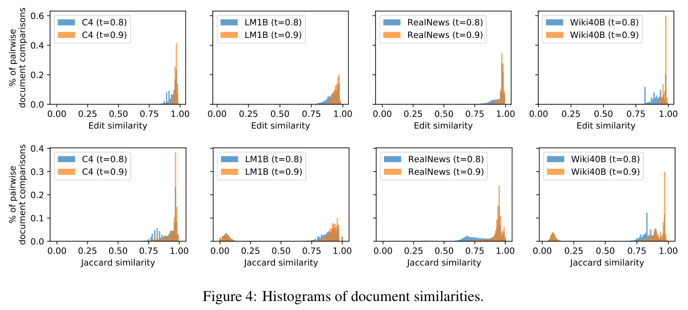
（接上页）不构建数据 \(S=S_1\mathbin{||}S_2\)，而令 \(S'_1=S_1\mathbin{||}S_2[\mathrm{upto}K]\)，其中 \(K\) 大于最长子串匹配长度。随后在 \(S'_1,S_2\) 上构建数组。为合并数组，可从第一个数组删除索引 \(|S_1|\) 之后的项目，并以归并排序方式插入第二个数组。
并行合并部分后缀数组。现在把独立数组合并为单个后缀数组 \(A\)。考虑更简单的情况：合并两个部分后缀数组 \(B,C\)。令 \(i=0\) 索引 \(B\)，\(j=0\) 索引 \(C\)。每轮迭代，若 \(S_{B_i..}<S_{C_i}\)，将 \(B_i\) 推入 \(A\)，否则推入 \(C_i\)，重复直到 \(i=|B|-1\)、\(j=|C|-1\)。推广到 \(K\) 个划分，只需将上述单一比较替换为最小堆，每轮需要 \(O(\log K)\ll10\) 工作量。
一般情况下，算法复杂度是 \(O(Nm\log(K))\)，其中 \(N\) 是数据集长度，\(m\) 是前缀匹配平均长度，\(K\) 是划分数量。因此一般情况下称其为线性时间并不正确，但在我们的情况中是线性的。由于最长匹配长度以最长序列长度为上界，只要数据集规模与数据集中最长序列长度无关，算法就保持高效。
同样，可把该操作并行到 \(L\) 个同时运行的任务；实践中设 \(K=L\) 为机器线程数。在 \(K=2\) 情况下，任务 \(l\) 处理 \(i\in[jN/L,(j+1)N/L]\)，通过在 \(C\) 中二分搜索，选择 \(j\) 的边界，使 \(S_{B_i}<S_{C_j}<S_{B_{j+1}}\)。\(K>2\) 情况相同，只是在全部 \(K\) 个部分后缀数组上重复。
计算分析。算法在云端一台具有 96 核与 768GB 内存的 VM 上运行。算法高效，例如，处理 Wiki-40B 训练集，三百万样本、4GB 文本，实际需 2.3 分钟，即 2.1 CPU 小时。为 350GB C4 构建后缀数组，实际时间不到 12 小时；但仍受内存限制，因此相当于约 1000 CPU 小时。构建好后缀数组后，对 C4 去重不到一小时。
注意，算法仍要求数据集本身装入内存，以高效索引任意位置，但不需要把整个后缀数组放入内存。幸好如此，因为后缀数组需要八倍空间开销。例如，350GB C4 的后缀数组为 1.5TB。
与在该数据集上训练语言模型的成本相比，对训练集去重所需额外工作可忽略。
设置重复阈值。重要问题是，子串匹配要有多长，才算重复。图 5 绘制将考察的四个数据集中子串匹配频率。对于长度 \(k\) 的每个子串，计算是否存在另一个与之完全相同的长度 \(k\) 序列的概率（下页接续）
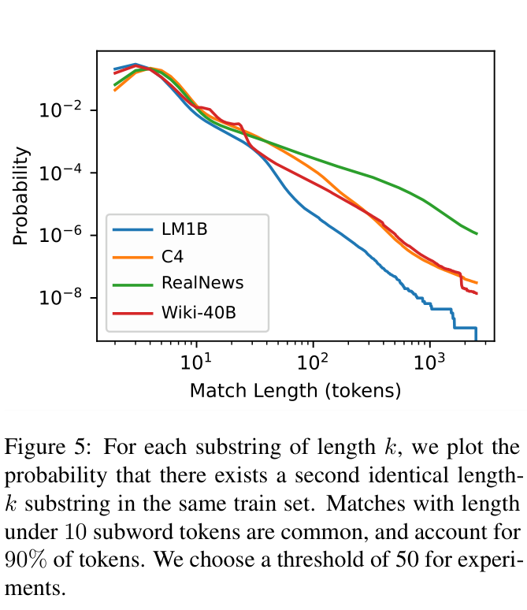
（接上页）形式化为：
\(\displaystyle m(k)=\Pr_{i\in[N]}[\exists j\ne i:S_{i..i+k}=S_{j..j+k}]\)
保守起见，选择 50 token 阈值：“膝点”出现在 10 token，人工检查长度 25 的匹配未发现假阳性。随后将该值翻倍，以获得极大的误差容限。
C 模型训练的进一步细节
每个模型训练两个 epoch。由于 C4-ORIGINAL 和 C4-EXACTSUBSTR 都含约 365M 样本，采用 batch 大小 4800，训练 152K 步，约两个 epoch。C4-NEARDUP 含约 350M 样本，训练 146K 步，约两个 epoch。在 128 核 TPU v3 pod slice 上，C4-ORIGINAL 和 C4-EXACTSUBSTR 的 XL 模型训练约 131 小时，即 5.5 天；C4-NEARDUP 的 XL 模型约 126 小时。与 T5 一样，使用 Adafactor 优化器 (Shazeer and Stern, 2018)。base 模型使用恒定学习率 0.01，XL 模型使用 0.001。
1.5B 参数 XL 模型有 24 层，每层 32 个 attention 头。模型 embedding 大小 2,048，前馈层隐藏大小 5,120，attention 头键／值维度为 64。110M 参数 base 模型有 12 层，每层 12 个 attention 头。模型 embedding 大小 768，前馈层隐藏大小 2,048，attention 头键／值维度为 64。
D 能源消耗
在 128 核 TPU v3 上训练约 131 小时，即 5.5 天。近似去重的数据集比原始小 3.9%，训练每 epoch 63 小时，两个 epoch 节省约五小时计算。XL-ORIGINAL 在北美训练，而 XL-EXACTSUBSTR 与 XL-NEARDUP 在台湾训练。使用 Patterson et al. (2021) 数据，计算每小时每核心的 MWh，再乘以用量，估计模型训练能源消耗，计算方式见表 6。为简化，采用台湾数据中心的估计值。估计 XL-ORIGINAL 与 XL-EXACTSUBSTR 训练两个 epoch 使用 5.86MWh。XL-NEARDUP 步数更少，估计使用 5.63MWh。每个 base 模型在 64 核 TPU v3 pod slice 训练约三天，估计使用 1.61MWh。
除模型训练外，评估与推理也在 64 核 TPU v3 pod slice 上进行。从 XL 模型生成 100,000 序列约需 0.64 小时。对模型两个 checkpoint，分别为五种提示各生成 100,000 序列，共每模型 1M 序列，耗时约 19.2 小时。估计生成 3M 序列使用 0.43MWh。
E 更多结果
定性例子。表 8 给出 C4 文档对的若干例子，其编辑距离接近所选 0.8 编辑相似度阈值。表 9 展示被 EXACTSUBSTR 识别为在 C4 出现多次的子串。表 10 展示被识别为记忆内容的无提示生成例子。
记忆分布。图 6 展示四种提示下，所有生成序列的记忆量分布：训练集中有重复项的训练样本、（下页接续）
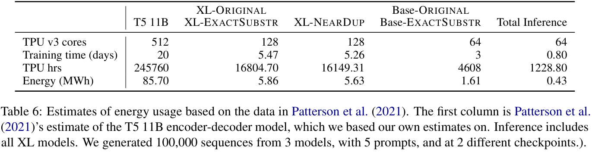
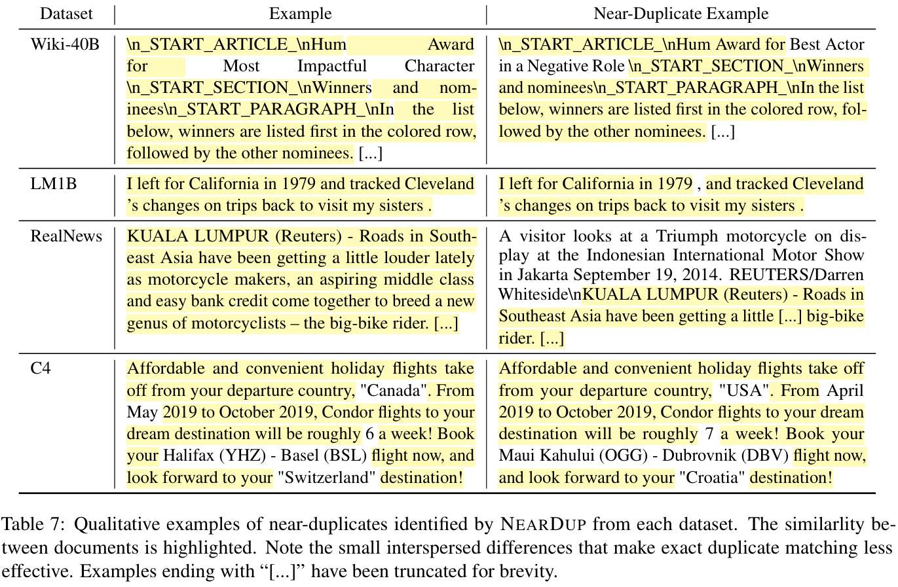
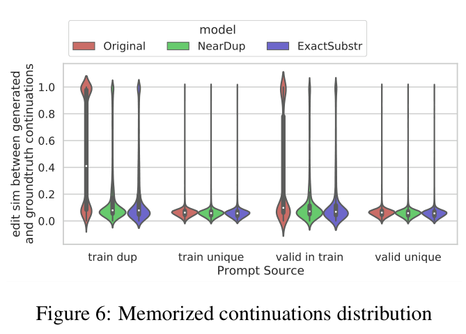
（接上页）没有任何重复项的训练样本、训练集中有重复项的验证样本，以及没有任何重复项的验证样本。
重复项很多的 URL。表 11 显示被 NEARDUP 识别为近重复项比例最高的 URL。C4 中，这些往往是销售许多类似产品的网站，因此有大量模板文本。RealNews 中，内容聚合网站似乎特别常见。
NEARDUP 簇大小。图 8 显示在 RealNews、LM1B、Wiki-40B 上运行 NEARDUP 的簇大小分布，C4 结果见主文图 1。
数据集规模。表 13 给出每个数据集去重前后的 BPE token 数与样本数。由于大多数数据集在创建时已经（第 18 页接续）
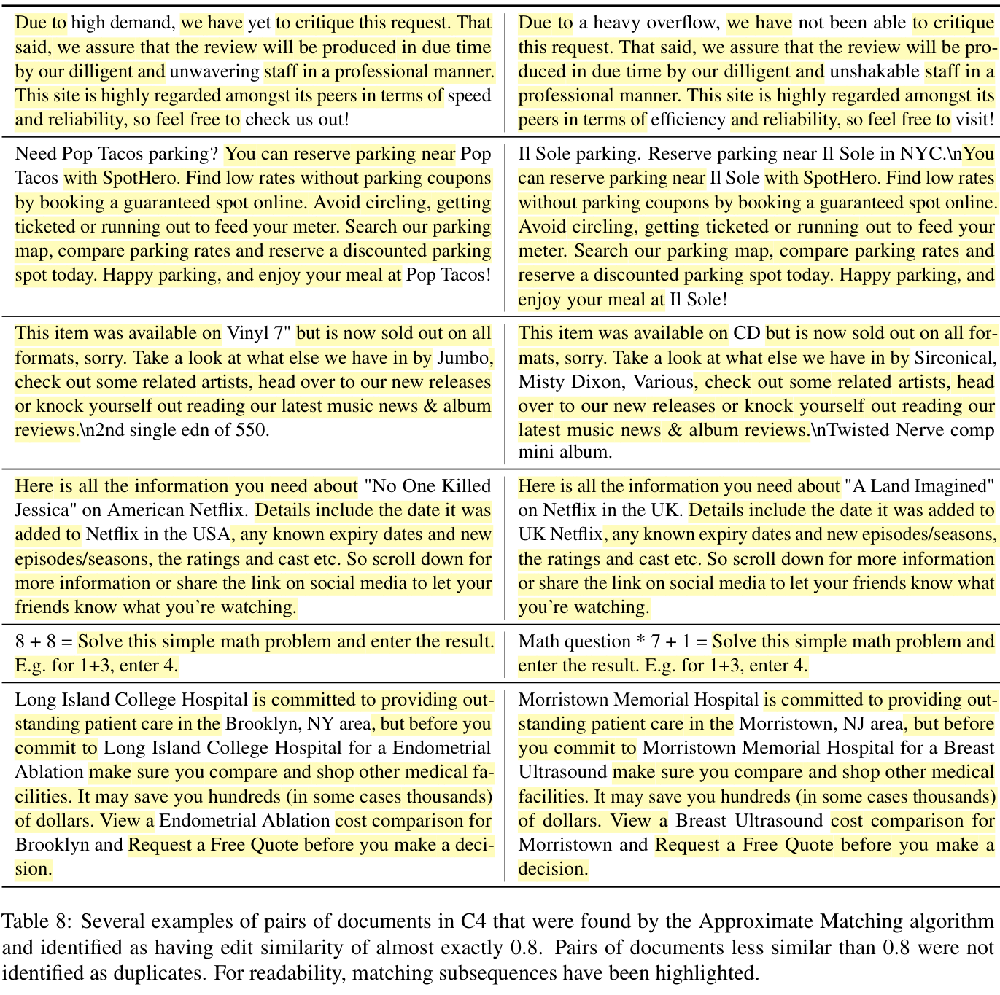
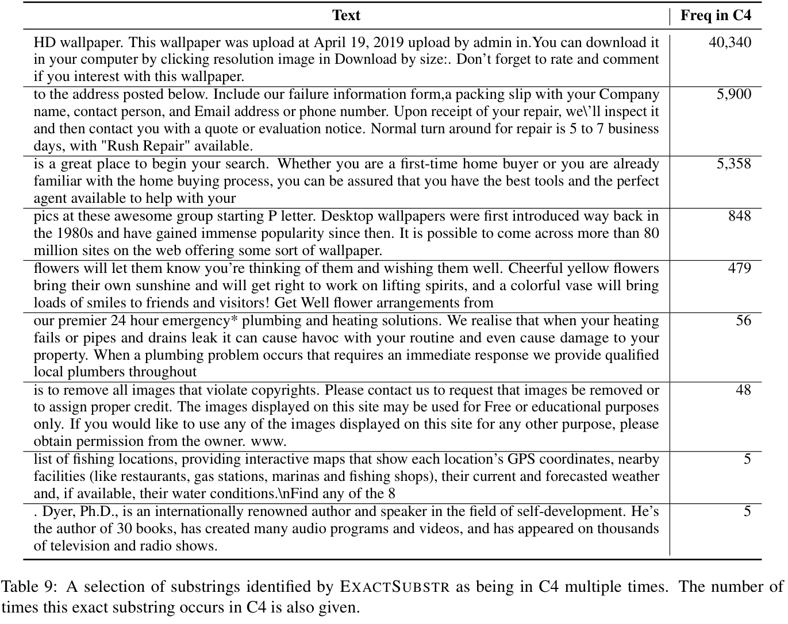
（接第 16 页）针对精确匹配去重，EXACTSUBSTR 去重不会完全删除许多样本。
LM1B 上的困惑度。图 7 与主文图 2 相同，但加入 base 模型在 LM1B 评估集上的困惑度。
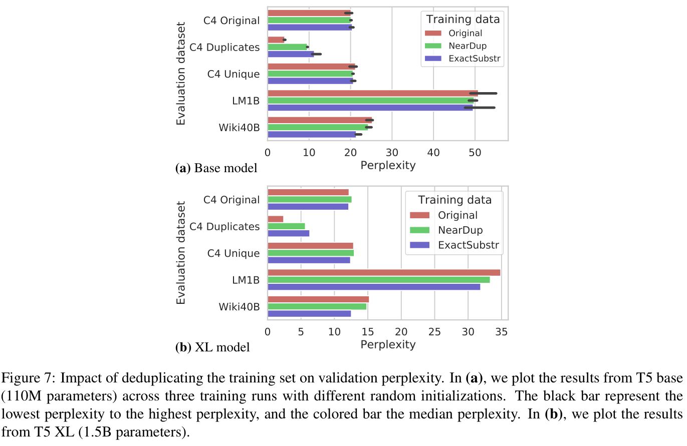
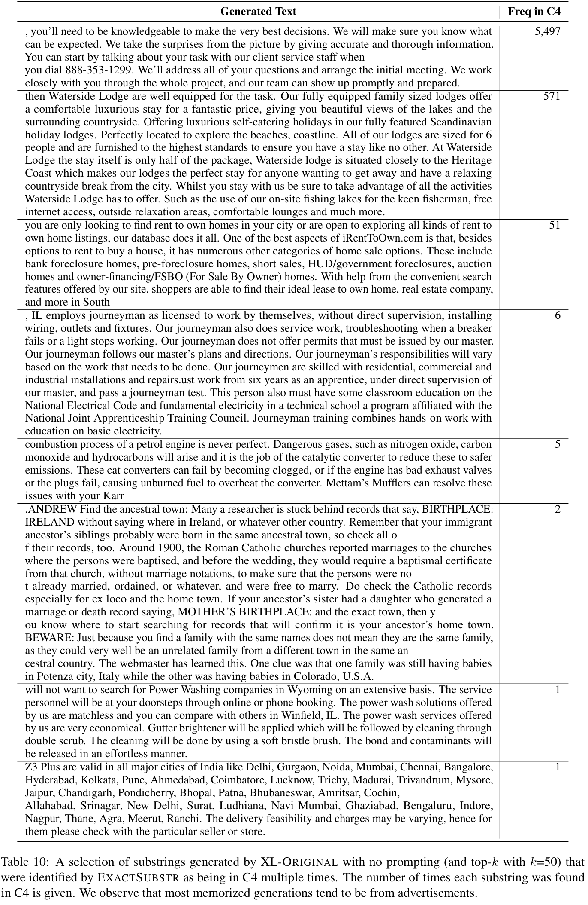
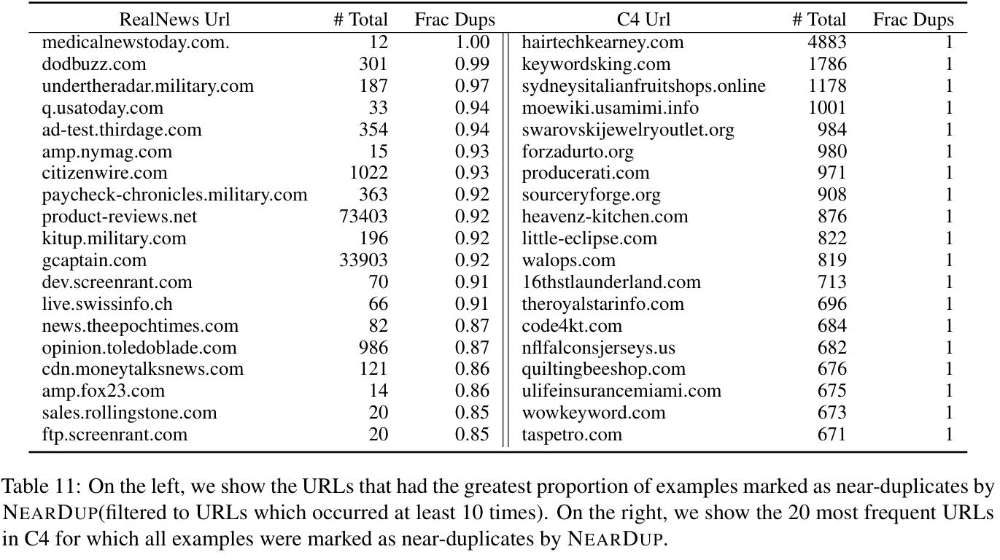
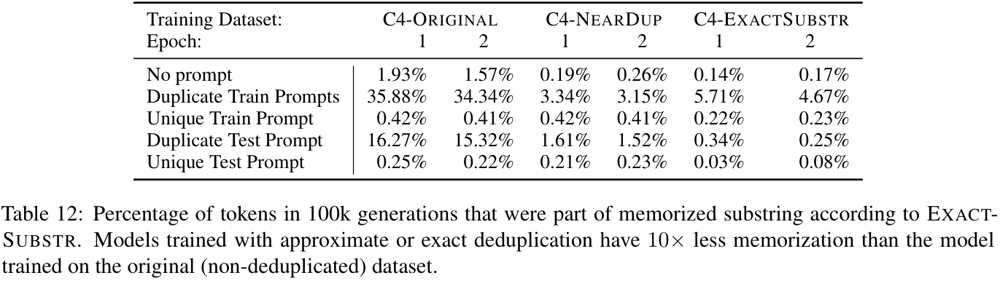
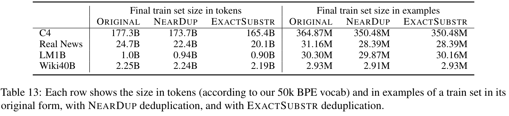
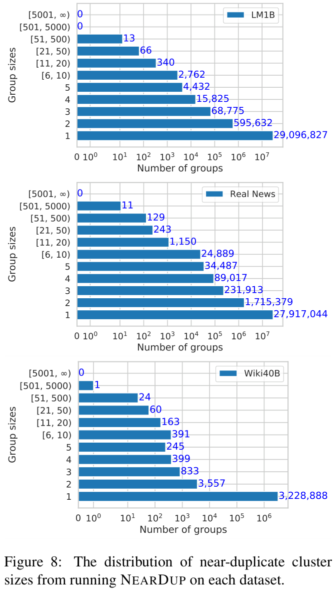